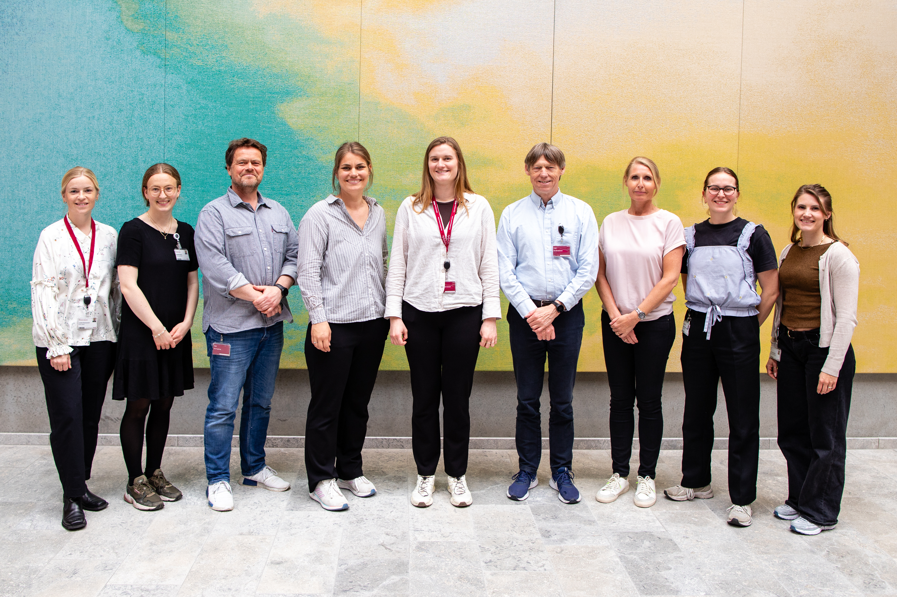
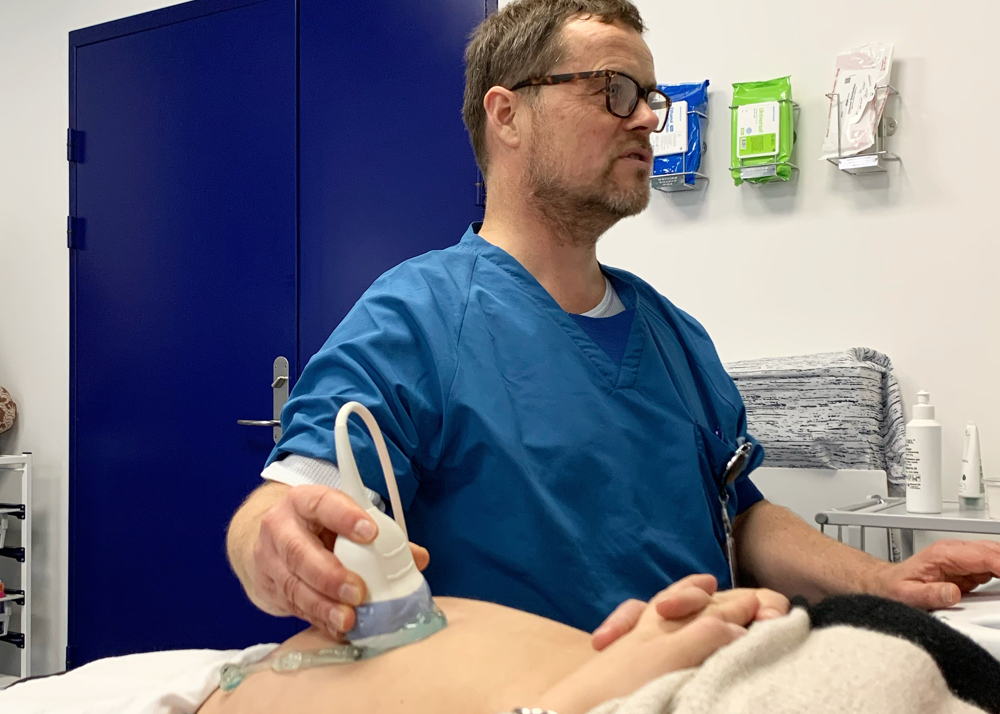
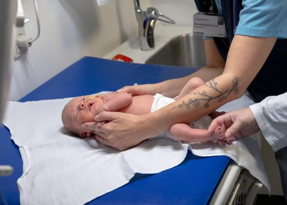
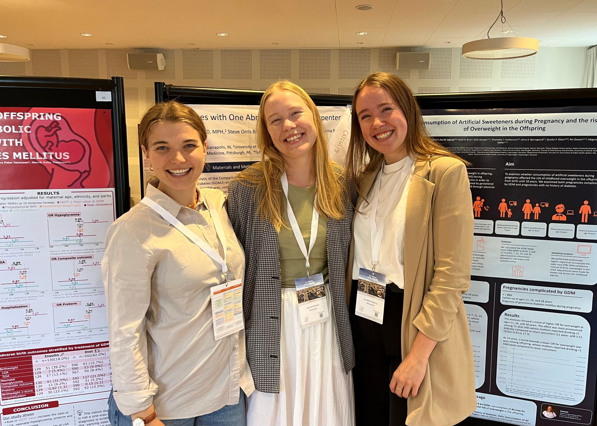

THE PADME RESEARCH GROUP
PADME (Pregnancy And Diabetes Metabolism Epidemiology) is a research group anchored at Steno Diabetes Center Aarhus established in close collaboration with the Department of Obstetrics and Gynecology, Aarhus University Hospital. Our ambition is that women with diabetes and other metabolic diseases can achieve a pregnancy that is as successful and uncomplicated as healthy women. We have a shared mission to know more about how environmental and metabolic changes such as diabetes and obesity affect pregnancy, fetus, mother and child in the short and long term, and want our research to benefit future parents and their children and thus the next generation. To ensure this, we focus on being an interdisciplinary group with many different competencies, working synergistically and striving to create a safe and inclusive research environment for younger researchers.

Improving pregnancies complicated by diabetes and metabolic disease
Ambition
Our ambition is that women with diabetes and other metabolic diseases can achieve a pregnancy that is as successful and uncomplicated as healthy women.


Title here
We have a shared mission to know more about how enviromental and metabolic changes such as diabetes and obesity affect pregnancy, fetus, mother and child in the short and long term, and want our research to benefit future parents and their children and thus the next generation.
Title here
We are based at a Danish hospital, which gives us valuable insights into the healthcare system. We aim to identify relevant needs and develop data-driven tools to tackle these challenges. In this process, beyond the scientific community, we interact with stakeholders, clinicians and patients.
